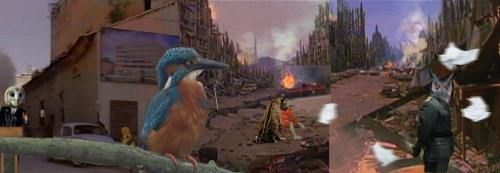

In his 2003 documentary, Los Angeles Plays Itself, filmmaker, Cal Arts professor, and Los Angeles native Thom Andersen criticizes Hollywood cinema’s misrepresentation of the metropolis. The City of Angels, he argues, is rarely captured on film as is. The industry either splices LA into unrecognizability, converting the city into an anonymous backdrop, or denigrates it directly, at times even forcing the already much-maligned urban center to play the villain.
Nadia Hironaka and Matthew Suib’s ambitious video installation The Soft Epic or: Savages of the Pacific West, 2008, commits all of the filmic infractions Andersen so despises. Happily, however, the work sins in the service of critique. The Philadelphia-based duo’s five-projection panorama immerses viewers in a fiery, dystopian downtown littered with rubble and populated by wild beasts run amok. Collaged from multiple moving images, the space depicted is entirely fictional: As one scans the vista, gleaming skyscrapers give way to the charred remains of a Gothic cathedral. And yet, centered amid the carnage is a sign marking the junction of Eighth and Hill streets, an intersection in Los Angeles’s business district. Squarely casting the oft-tortured city in the role of Boschian hellscape, Hironaka and Suib create an environment so excessively apocalyptic it reads only as spectacle. In this Disneyland gone haywire, a security guard with the head of an owl stands mute, an unwitting sentinel as a lion roars from the flames of a burning sedan, a leopard and a woman mechanically perform copulation, and a human-headed pig leaps gleefully into the fray. Crows flap their wings as the sky rains debris on a miniature pope calming one of his hysterical devotees with conciliatory hugs. What sounds like breaking glass, crying animals, and discharging lasers remains faint and untraceable.
The intentional roughness of the imagery renders Hironaka and Suib’s fragmented cityscape thoroughly incredible. The edges of The Soft Epic’s visual patchwork are ragged; the colors in each of its projections have not been cleanly calibrated. Disjunctions between the work’s video and audio tracks reinforce its status as cinematic construction. Andersen might be proud. Here lies the myth of Los Angeles, laid bare.
— Sarah Kessler
]]> http://2003-2008.telic.info/soft-epic-review-on-artforumcom.yeah/feedAfter 5 years at 975 Chung King Road, TELIC Arts Exchange is moving to 972B Chung King Road, This move is part of a larger transformation of TELIC’s program into an underground school, a video gallery distributed around Chinatown, and a project space in Berlin.
We invite you to learn more about these changes on Saturday, September 13,our final reception at our current location. Information in the form of postcards, maps, and videos about these future initiatives will be on exhibit.
THE PUBLIC SCHOOL
The new 972B Chung King Road space, accessible through The Alley, will be primarily occupied by the Public School. With this expansion, all exhibitions and publications will be produced through or in association with the school. At 4pm on Saturday, there will be a meeting of the free monthly class, “The Public School,” which will discuss these changes. (http://thepublicschool.org)
DISTRIBUTED GALLERY
The Distributed Gallery, opening October 3, begins as a network of four video monitors in locations in and around Chinatown’s West and Central Plazas. Monitors will be located at Fong’s, Via Cafe, Ooga Booga, and the Public School. Each month someone new will curate or create an exhibition, accompanied by a small publication. Upcoming shows include: DIY, Tom Leeser, Geoff Manaugh, Tom Moody, the Public School, Annie Shaw, James Merle Thomas, and Wendy Yao.
BERLIN
A new space, set on Brunnenstrasse in Berlin, opening in January. Gallery design by SMAQ (http://www.smaq.net)
]]> http://2003-2008.telic.info/a-statement-regarding-the-future-of-telic.yeah/feedThis evening will feature a screening of YouTube videos curated by its audience. All are invited to select their favorite YouTube clip and submit the corresponding URL address to reserve a timeslot. Entries can be reserved ahead of time via Telic’s website (see below) or in person on the night of the event. There is no limit to the number of selections any one person can make and are strictly on a first come, first served basis to the first 50 entries. (Due to the large number of videos, please try and keep your selections around 3 minutes or less!)
$5 will reserve your timeslot and automatically enters you into a raffle of prizes donated by local businesses. Winners will be announced at the end of the evening. (After you do the Google Checkout thing below, send an email to everyonesacurator -at - telic -dot- info with your selected YouTube URL).
]]> http://2003-2008.telic.info/everyones-a-curator.yeah/feed
These are Katie’s photographs on flickr. We’ll upload our own soon from the performances!
]]> http://2003-2008.telic.info/dinner-theater-installation-by-katie-byron.yeah/feed
After more than seven months of trying to secure the perfect location, we can announce that TELIC is starting a project in the Brunnenstraße gallery district. We are very excited and lucky to have a Berlin-based architecture, landscape, and urbanism office, named SMAQ (see Cozy Chair, above), designing the space for us. More news to come!
]]> http://2003-2008.telic.info/smaq-to-design-our-berlin-gallery.yeah/feedThe inaugural session of People Watching will feature a classic Film Noir thriller about a serial killer. The aim of this screening is not to figure out “whodunnit”, but to ponder the notion that in 1931, in a city with a population of over 4,000,000, all its residents (though often working separately) might share the unified objective of apprehending a single criminal.
Thursday, July 3 at 8pm.
This is an outdoor screening, so dress appropriately!
Organized by Helen Cahng.
[ photos on flickr ]
]]> http://2003-2008.telic.info/conversations-that-never-happened-opening-reception-photos.yeah/feedViagra online store
Phentermine no prescription
Clomipramine
Phentermine on sale
Meridia
Viagra cialis
Viagra tablets
Xanax tablets
Hydrocodone for ibs
Streptomycin
How long does phentermine stay in your system
Phentermine pharmacy online consultation
Klonopin
Interstitial cystitis xanax
Pyrilamine
Stopping xanax
Buy cheap tramadol online
Keyword prescription qoclick tramadol without
Cheap phentermine
Oxybutynin
Digitoxin
Cialis free trial
Mirapex
Phentermine $89
Amlodipine
Buy phentermine online without a prescription
Woman taking viagra
Xanax uses
Cialis new viagra
Buy viagra online
Birth defects and phentermine use
Viagra prescriptions
Cialis compared to viagra
Generic soma
Bethanechol
Effects long side term xanax
Xanax withdrawal muscle joint nerve pain
Decamethonium
Phentermine 37 5
Snorting vicodin
Viagra erection
Valium vs xanax
Eldepryl
Does it viagra work
Celexa phentermine
Exelon
Chlorpheniramine
Cefonicid
Phentermine diet medication
Diethylstilbestrol
Xanax for dogs
Phentermine alternative
Gemfibrozil
Discount pharmacy phentermine purchase
Bentyl
Premphase
Nystatin
Phentermine able to beshipped to mo
Viagra kaufen
Phentermine pharmacy cod
30mg phentermine yellow
Cialis compare levitra
Generic uk viagra
Valium vicodin
Argento soma
Xanax in urine
Buspirone
Cosopt
Mitoxantrone
Oxycontin
Viagra buy viagra
Is phentermine dangerous
Buy viagra now online
Phentermine international order
Ambien on line
Androgel
Adipex phentermine prescription
Compare ionamin phentermine
Delavirdine
Is there a phentermine shortage
Leuprolide
Viagra on line uk
Filing income tax tramadol
Insulin
Phentermine hc
Streptokinase
Orlistat
Generic viagra online pharmacy
Keppra
Pentaerythritol
Minocycline
Thiphenamil
Levivia vs viagra
Hydrocodone online pharmacy
Opium
Allopurinol
Ambien medication
Dilaudid
Cheapest diet phentermine pill
Buy phentermine
Cheap phentermine overnight delivery
Nadolol
Methixene
Low dose of viagra
Loracarbef
Phentermine sales online
Free ambien
Viagrarecords
Monopril
Viagra libido
Viagra price online
Viagra prescription uk
Book buy online order viagra
Buy viagra prescription online
Buy Bontril
Guanfacine
Online phentermine no prescription
Premphase
Phentermine buy online
Ipratropium
Astemizole
Can i take xanax with zocor and procardia
Buy ambien online
Methadone
Sparfloxacin
Carbarsone
Phentermine success
Buy xanax on line
Pentoxifylline
Viagra doses
Phentermine 90
Nifedipine
Propantheline
Buy meridia
Purchase cialis
Soma side effects
Buying phentermine without prescription
Phentermine cod
Tridihexethyl
Prescription tramadol
Oxyphenonium
Soma seed
Tramadol 100mg
Plendil
Ampicillin
Order phentermine phentermine online
Phentermine airborne express cod
Viagra cheap
Information viagra
Generic viagra from india
More news by category Topic -: Buy phentermine saturday delivery ohio Tramadol hydrochloride tablets Picture of xanax pills Free shipping cheap phentermine Buying phentermine without prescription Safety of phentermine Pyridium Generic viagra cialis Cialis generic india Pink oval pill 17 xanax identification Buy free phentermine shipping Best price for generic viagra Information about street drugs or xanax bars Ordering viagra Snorting phentermine Hydrocodone overdose Lithium Amiodarone Get online viagra Order viagra prescription Order xanax paying cod Cheap phentermine free shipping Imiquimod Tramadol next day Linkdomain buy online viagra info domain buy onlin Pfizer viagra sperm Vidarabine Cheapest viagra price Prevacid Viagra cialis levitra comparison Dutasteride Lisinopril Thiotepa Female spray viagra Black market phentermine Betamethasone Cialis forums What does xanax look like Loss phentermine story success weight Order xanax overnight Viagra alternative uk Diet online phentermine pill Order xanax cod Mecamylamine Eulexin Cheap hydrocodone Buy cheapest viagra Viagra xenical Phentermine with no prior prescription Xanax in urine Macrodantin Cheap phentermine with online consultation Epivir Buy phentermine epharmacist Ditropan Woman use viagra Cialis erectile dysfunction Xanax withdrawl message boards Viagra online store Atorvastatin Generic ambien Is phentermine addictive Next day delivery on phentermine Buy online viagra Ethanol Natural phentermine Avandamet Xanax long term use Diet page phentermine pill yellow 5 cheap Cheapest secure delivery cialis uk Information medical phentermine Cialis experience Phentermine no perscription Compare ionamin phentermine Viagra cialis levivia dose comparison Noroxin Effects of viagra on women Buy cheap cialis Viagra shelf life Hydroxyurea Phentermine discount no prescription Buy cheap online viagra Dog xanax Online cialis Viagra class action Viagra price Phentermine without prescription and energy pill Hydrocodone cod only Nicoumalone Cheapest viagra Cheap ambien Vicodin without prescription Phentermine prescription online Phentermine snorting Mirtazapine Quazepam Isradipine Buy generic viagra online Xanax look alike Moxifloxacin Viagra experiences Piroxicam Nicorette Free try viagra Sotalol Cash on delivery shipping of phentermine How do i stop taking phentermine Xanax prescriptions Cheapest phentermine 90 day order Niacinamide Phentermine weight loss Phentermine
]]> http://2003-2008.telic.info/tamala-poljak-and-anna-oxygen-on-kpfk.yeah/feed
Humans are capable of such funny contradictions. Take, for instance, our proclivity to forget that we, too, are animals, while nonetheless looking to other primates in an effort to further study ourselves. In a video series entitled “Primate Cinema,” Rachel Mayeri dives headfirst into this often comic dilemma. Three videos in this series are currently on view at Los Angeles’ TELIC Arts Exchange, and each takes the increasingly popular primate narrative genre as its starting point to build “an observation platform for viewing the social, sexual, and political behavior of human and nonhuman primates.” In Jane Goodall and the Wild Chimpanzees we see a live performance of a classic nature documentary, developed and taped as the result of a three-week workshop at TELIC. The piece explores the documentary medium and the work it does to dramatize scenarios, despite its presumed objectivity. How to Act like an Animal also unfolded from a workshop–in this case co-led by primatologist Deborah Forster and theater director Alyssa Ravenwood. The tasks rehearsed speak to common perceptions of the primitivity of non-human animals, with the close study and re-interpretation of a nature documentary leading to the act of “hunting, killing, and sharing the meat of a colobus monkey.” An earlier video in the series, Baboons as Friends, reaches beyond the model of pure consumption and survival to explore the emotional and social lives of primates. Shot with human actors in a film noir style, the piece explores the ways in which “lust, jealousy, sex, and violence transpir[e] simultaneously in human and nonhuman worlds.” While entertaining, the videos also taxonomize and observe the field of primate studies as a model of inquiry and a classic medium of scientific thought. If anything, Mayeri’s work takes a compelling look at the evolution of a field crafted to study our own evolution.
- Marisa Olson
]]> http://2003-2008.telic.info/rhizome-on-rachel-mayeris-primate-cinema.yeah/feed
Nadia Hironaka and Matthew Suib present a monumental video and audio installation examining historical and contemporary representations of cultural anxiety, and the fluid relationship between History and Cinema–where fact and fiction collapse into each other like the folds of a drawn theater curtain.
Comprised of multiple projections and a newly commissioned surround soundtrack by Bird Show, the work synthesizes images and effects from historical panoramas, epic sci-fi and disaster films, and the paintings of Hieronymus Bosch in a fractured, dystopic cityscape dotted with eternal flames and chimeras. Across the expansive video projection, Hollywood splendor usurps mythological and historical narrative in service of political authority and social order. [ Soft Epic website ]
Sound by Ben Vida
Surround sound mix by Nadia Hironaka and Matthew Suib
Artist Biographies
Nadia Hironaka received her Masters of Fine Art from The Art Institute of Chicago and her Bachelors of Fine Art from The University of the Arts. Currently she resides in Philadelphia and is a professor at The Maryland Institute College of Art. Active within the community she is a supporter of local art venues and in 2007 co-founded Philadelphia’s only video gallery, Screening. She is a 2008 Pennsylvania Council on the Arts fellow and received a Pew Fellowship in the Arts in 2006, other awards include: The Leeway Foundation, Peter Stuyvessant Fish Award in Media Arts, prog:me video artist award, The Black Maria Film Festival, and The New York Short Exposition Film Festival. Her films and video installations have been exhibited internationally in: PULSAR (Venezuela), Rencontres Internationals (Paris/Berlin), The Den Haag Film and Video Festival (The Netherlands), The Center for Contemporary Arts (Kitakyushu, Japan), The Pennsylvania Academy of Fine Arts, Morris Gallery, The Black Maria Film Festival, The Donnell Library (NYC), The Fabric Workshop and Museum (Philadelphia), The Institute of Contemporary Art (Philadelphia), The Galleries at Moore College of Art (Philadelphia), and Vox Populi, (Philadelphia).
Philadelphia-based artist Matthew Suib has exhibited installations, video and audio works and photographs internationally at venues including the Philadelphia Museum of Art, Kunstwerke Berlin, Mercer Union (Toronto), The Corcoran Gallery of Art (D.C.) and PS1 Contemporary Art Center (NYC). Recent exhibitions include Locally Localized Gravity at the Institute of Contemporary Art (Philadelphia), and the 2007 Moscow Biennale. In 2007, Suib co-founded Screening, along with artist Nadia Hironaka. Screening is Philadelphia’s first gallery dedicated to the presentation of innovative and challenging works on video and film. Screening is a project devoted to expanding access to these media and exploring ways that moving image culture influences our understanding and experience of the world. Suib is also a Pennsylvania Council on the Arts fellow, and a former member of the Philadelphia artist collective Vox Populi.
This exhibition and the following events have been organized by Helen Cahng. Supported in part by The Maryland Institute College of Art, the Pennsylvania Council on the Arts, and the Department of Waste Management.
PEOPLE WATCHING
Friday August 1, 8pm
$5 suggested donation
This event is part of a series offered by The Public School (http://www.publicschool.org).
People Watching is a monthly film-screening series with the goal of approaching movies for their anthropological significance, over their contribution to film history or academia. The title of each film will be kept a mystery until the night of the screening.
Although World War II is most highly represented within the war film genre, the Vietnam War is arguably the most prominently featured in films of the past 30 years. Unlike their propagandistic counterparts of WWII, Vietnam War flicks tend to represent the disillusion of the American people towards the war and what it represented. Films such as Apocalypse Now and Full Metal Jacket shocked audiences with their graphic and horrific depictions from the battlefield.
Our next screening will address the effects of war in a different light, with a film commonly categorized as a romantic comedy. This evening’s selection from 1968 is set in middle class Los Angeles where the war in Vietnam and the latent cultural anxiety it produced at home are seen not as the subject, but part of the backdrop for another story….
EVERYONE’S A CURATOR
Saturday, August 16, 7pm
This evening will feature a screening of YouTube videos curated by its audience. All are invited to select their favorite YouTube clip and submit the corresponding URL address to reserve a timeslot. Entries can be reserved ahead of time via Telic’s website or in person on the night of the event. There is no limit to the number of selections any one person can make and are strictly on a first come, first served basis to the first 50 entries. (Due to the large number of videos, please try and keep your selections around 3 minutes or less!)
$5 will reserve your timeslot and automatically enters you into a raffle of prizes donated by local businesses. The winners will be announced at the end of the evening.
]]> http://2003-2008.telic.info/the-soft-epic-or-savages-of-the-pacific-west.yeah/feed